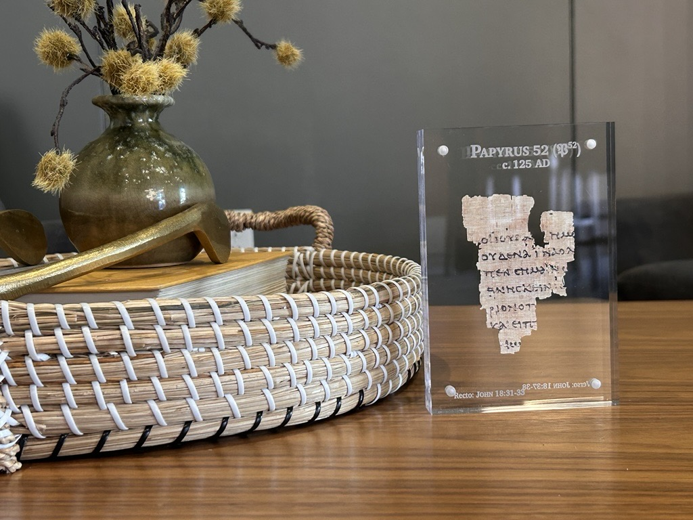

Ancient Words. Eternal Truth.
Handcrafted Biblical Manuscript Facsimiles
Replicas of the earliest New Testament manuscript, faithfully preserved and copied, from the first generation of Christians, to us today.
Explore the Collection
Historically Accurate
True to size and shape
Handcrafted with Care
Intricately created and designed
Faithful to Scripture
Based on Biblical Scholarship
A Witness to The Truth
Pointing to Jesus Christ
From John's hand to yours
A small fragment. An extraordinary journey.
Swipe to follow the story →
-
c. 90 AD
The Gospel is written
John writes his record of the life of Jesus—the last of the four Gospels.
-
c. 125 AD
A witness in ink
John's Gospel is copied and spreads rapidly, reaching Egypt within just a few decades. P52 preserves a fragment of that story.
-
1920
From Egypt to Manchester
Purchased in Egypt for the John Rylands Library, the fragment awaits recognition of its significance.
-
Today
The story within reach
A handcrafted facsimile brings this ancient witness into your home.
1 of 4